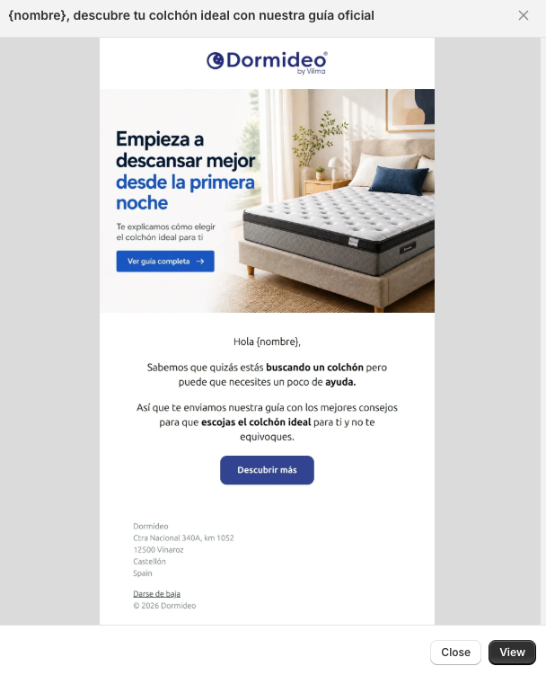

Email 1 · Día 1
{nombre}, descubre tu colchón ideal con nuestra guía oficial
Hero editorial con dormitorio + colchón. Bajada: «Te explicamos cómo elegir el colchón ideal para ti».
Cuerpo: «Sabemos que quizás estás buscando un colchón pero puede que necesites un poco de ayuda. Así que te enviamos nuestra guía con los mejores consejos para que escojas el colchón ideal para ti y no te equivoques.»
CTA · Ver guía completa / Descubrir más